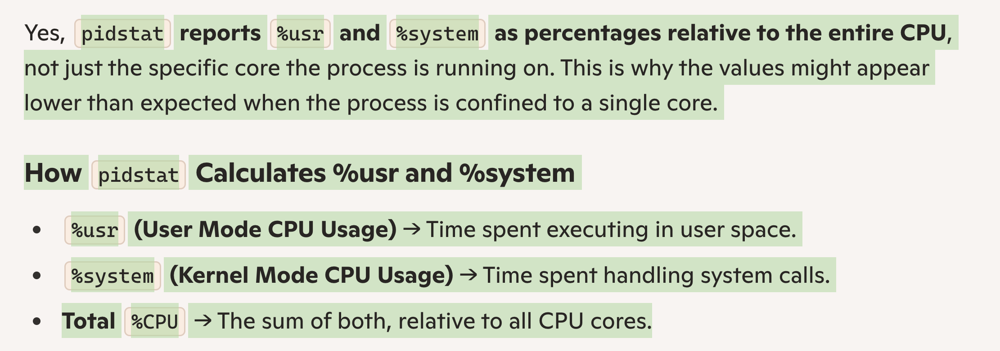

Basics of Linux [gcc, ldd, stdlibc++].
- ldd : (list dynamic dependencies)
A tool part of the glibc package.
e.g. ldd bin
- Relationship between GLIBCXXX and G++ and libstdc++?
- stdlibc++ is the official GNU Standard Library for C++.
- It contains symbol name spaces by the name of glibcxxx version 3.4.2 etc. Which means it the libstdc++ supports would support certain version of c++ ETC.
- You may check the ABI to see more details of relationships in versions of gcc and stdlibc++ : https://gcc.gnu.org/onlinedocs/libstdc++/manual/abi.html
- g++ : is the compiler for c++, it compiles c++ and links it against the libstdc++ library. Newer version of g++ would support newer version of c++ 14 etc. G++ is also part of the GCC library.
- How to check which all versions of glibcxxx are in your libstdc++ ?
- strings path_to_libstdc++ | grep “GLIBCXX”
BREW:
- Installing brew: Check out site.
-
General command:
brew command [--verbose|-v] [options] [formula] …
where formula is name of a package like: Node git etc. -
How to simply install a package: brew install package
E.g. ~ brew install node
It will uninstall any previous installed package. - How to check version an installed package: brew info node
- How to update BREW and all formulae. : brew update
- Packages:
- brightness : To control the screen's brightness from Terminal.
- brew install brightness
- How to check which all packages have been installed?
ZSH TERMINAL
Install ZSH terminal to keep track of present git directories you are in.
How to know which terminal you are using?
echo "$SHELL"
||ly:
PATH: echo "$PATH"
HOME Directory: echo "$HOME"
How to add a new directory to the PATH?
Go to home ->
vim .bashrc | .zshrc or nano ~/.bashrc
At the very end of that file:
export PATH="$HOME/.local/bin:$PATH"
Save the file->
source .bashrc
echo "$PATH"
If not to the path, if just wish to create an alias name for a path that you can cd to:
export PHORONIX_WORK=/Users/anantpathak/PhD/BenchMarking/Phoronix/phoronix-test-suite/
How to add a path to the LD_LIBRARY_PATH ?
https://stackoverflow.com/a/13428971
In .bashrc append: export LD_LIBRARY_PATH=\..\..path
& also add the method described in stackoverflow. Which says:
Cd /etc
Sudo vim ld.so.conf.d/randomLibs.conf
Add the path in that file and a new directory would get created: ld.conf.d with randomLibs.conf file
Sudo ldconfig for affect to take place
This flag is used by the ld program. What other flags are important to the Linux linker LD:
- LD_LIBRARY_PATH
- LD_RUN_PATH
Temporarily do it this way:
Export LD_LIBRARY_PATH=path:$LD_LIBRARY_PATH
or
Export LD_LIBRARY_PATH=$LD_LIBRARY_PATH:path // if we want the new path to be looked at the last.
How to view file permission:
ls -la
How to change file permission in Terminal:
chmod <755> <file_name> //-rwxr_xr_x
How to create a symbolic shortcut of a folder of file in linux?
ln -s source_file_fir .
Shell:
Separate command using '&' ';'
A variety of shell metacharacters can be used to perform OS command injection attacks.
A number of characters function as command separators, allowing commands to be chained together. The following command separators work on both Windows and Unix-based systems:
&
&&
|
||
The following command separators work only on Unix-based systems:
;
Newline (0x0a or \n)
On Unix-based systems, you can also use backticks or the dollar character to perform inline execution of an injected command within the original command:
` injected command `
$( injected command )
VIM:
How to undo an action?
Esc -> u
How to redo a thing?
Esc -> Ctrl + R
How to search a word in the document?
Esc -> /<word> -> Press Enter -> 'n' OR 'N' <next>
How to copy selected text on vim?
If it has to be copied within VIM, then
Esc -> y (for mouse selected line) or yy (to copy the full line where cursor is) -> p(paste)/d(delete)
Save different lines to registers?
Esc -> shift+v-> "a OR "b -> y
Pasting: "a OR "b -> p
Select lines w/o mouse?
Esc -> Shift + v(i.e. V) -> Up or down arrow keys
How to indent a bunch of lines?
Esc: Shift + v //Select lines
Shift + < OR > (i.e. the dot key)
Done!
How to reach the top of file?
Esc-> gg
For end:
Esc-> Gi
How to paste a text from another app without indentation?
Esc -> :set paste -> Then paste your text.
Then turn off the set paste method.
Esc -> :set nopaste
Yank, Paste, Delete
Y, p, d
How to create an SHA key?
ssh-keygen -t rsa
Then : cd ~/.ssh/'
Or
ssh-keygen -t rsa -b 2048 -f ~/.ssh/id_rsa
How to check if packages are installed well?
sudo dpkg-query -l git gitk git-gui subversion curl g++ rcs python-matplotlib fping bison build-essential flex openssh-server lvm2 thin-provisioning-tools python-pkg-resources
Dpkg --list | grep opencv
Apt list | grep more
pkg-config —list-all | grep gtk
How to upgrade the packages?
Sudo apt-get update //It fetches the list of new packages and upgrades the index
Sudo apt-get upgrade // It actually
s the packages.
How to remove a package and all its dependencies:
Sudo apt-get autoremove <pkgName>
How to download a file/zip from Internet directly to Ubuntu?
- wget -P /home/omio/Desktop/ "http://thecanadiantestbox.x10.mx/CC.zip"
- wget "http://domain.com/directory/4?action=AttachFile&do=view&target=file.tgz" //Will download in the current directory.
How to create a .bashrc file and load it.
Vim .bashrc
Type whatever is needed
Load it using:
source ~/.bashrc
How to send a file from local Windows PC to Remote SSH server?
Open powershell -> pscp -r <.\dir OR file_path_name> anant@server_name:/home/opt/hello.txt
REVERSE
To download a file from a remote server to your computer:
pscp user@remote:\home\user\some\file.txt c:\some\path\to\a\
FILE System Linux:
- Check disk size and info:
- Df -h
- Df -sh
- Directory size:
- Du
- Du -sh // would summarize the total used size of current dir and all sub dirs.
- Du -sh /home/user/*. #would display size of each first level dir in GBs.
- Du -h - - max-depth=1 /var
How to find a file/folder in Ubuntu? Note: regex needs to be properly implemented
- find / -name '*git-lfs*'
- find . -name “*.cpp”
- find . -type f -iname ‘*py2ipc*’ [f - file , i- case insensitive]
- find . -type d -name '.OpenIPC'
- Find . -name "*.cpp" | head | xargs wc –l [head = only top 10, xargs = do operation on each file result, wc = Word count]
- Find -type f -name “*.pdf” | xargs rm //would delete all files recursively
How to search for a keyword in files in subdirectories in Ubuntu?
- Grep -Ri
- Grep -rl “string string” . (R = recursive, l = show file names, . = current directory)
- Grep –Rin "string_to_search" --include="*.cmake"
- NOTE: Grep’s search string looks for the string in the file and not as a word. So, “ana” would give results for lines with “anant” or “anaconda” as well. Use of regex “*ana” doesn’t seem to work
- Search within a binary file:
- grep -a // It would treat a binary file as a text file
- Exclude Binary files and Only include exact matches:
- Grep –rin -IF "1.9.8"
- -I Excludes binary files.
- -F Makes the search exact
- Grep for a word and print file names, then perform operation on them:
- grep -rl -IF "search" | xargs sed -i "s/find/replace/g"
TMUX Commands::q
- To create a new tmux session: tmux new -s my_session
- Go back to a session from terminal: tmux attach -t <session-name>
- Detach from a session: C-b + d
- Lookup all opened sessions: tmux ls
- Creating new window within session: C-b + c
- Killing a window: C-b + & OR type: exit
- Moving between windows: C-b + [n,p,w]
- When in a session you can kill the SESSION by: C-b + : kill-session
- Increase scrollback bufer:
- vim ~/.tmux.conf
- set -g history-limit 5000
- Esc-> wq!
PANES:
- Renaming a window: C-b + ,
- Split pane horizontal: C-b + "
- Split pane vertical C-b + %
- Kill a pane: C-d
- Switching between panes: C-b + Arrow Keys
- Resizing a pane:
- C-b + : resize-pane -[R/D/L/U] [Units_in_int] e.g.: -R 30
- Enable mouse for that session: tmux set-option -g mouse on
- Mouse On persistent: In ~/.tmux.conf -> add tmux source ~/.tmux.conf
How to find and replace a word in Linux across files?
- Use ‘sed’
- Sed -i -e ’s/CMP/AAANANT/g’ *.XML
- -I = edit in place , I.e. not create a new file
- -e to look for further options
- s/ substitute the found expression.
- /g global, I.e. in a single line replica multiple found items if required
Regex
- https://developer.mozilla.org/en-US/docs/Web/JavaScript/Guide/Regular_Expressions/Cheatsheet
- E.g. on the word ”logging”
- “.logging” . any char except a whtespace
- “\slogging\s” whitespace before and after
How to extract a zip file?
- tar -xvf <file-name>
- x Extract
- v Verbose
- f fileName
How to zip a folder?
- tar -czvf archive.tar.gz ./stuff
- c Create an archive
- z gzip
- v verbose
- f the filename which would be the output.
How to find the current version of your GCC compiler?
- Gcc -v
- G++ -v
- ldd —version
- It would tell you the GLIBC version in your system, Glibc is GNU's implementation of the C standard.
- May be required when
How to patch a file in Linux:
- diff file1 file2 > file3.patch
- patch -b(backup) file1 -i(source patch) file3.patch
- With git: Just locally commit your changes and wrt to the current but one commit get a diff and create a patch
- Git diff commit_old commit_new > workaround.patch
- Git apply —ignore-whitespace /C/dir/…workaround.patch
How to find packages in Linux:
- pkg-config —list-all | grep -i <name>
- pkg-config —cflags <name>
Package managers:
- apt [Ubuntu]
- Uses dpkg internally
- sudo apt-get install <name>
- sudo apt depends <name>
- sudo apt list - -installed | grep -i <name>
- Sudo apt-get update // updates the package and apps' info and version, doesn't actually installs any of the updates.
- Follow the above one with: sudo apt-get upgrade
- sudo apt-get install build-essential //Will install a lot of important tools like gcc, g++
- Sudo apt-get autoremove or autoclean
- Packages:
- Python: python3, python3-dev
How to see files in the Terminal using ‘less’
- Less -N FILEname.txt ; N for showing line numbers // Or when inside the file.
- Esc / searchWord Enter; n or N to more ahead and back respectively
- LineNumber -> g
- Small '-i' when inside less to activate case insensitive search or any other operations.
How to get rid of the stupid “Permission Denied ” message:
- suffix: -print 2>/dev/null
- print > /dev/null 2>&1 // may be it will silence all of the output
Check OS-version:
- Cat /etc/os-release
How to create symbolik link in Linux and Windows?
Ln -s source_file_path link_name
Windows (CMD Prompt): mklink targetfile location b
Processes and running modules:
- PS :
- a : all users
- u : Displays the user/owner of the processes.
- x : Includes processes that are not attached to a terminal. e.g. processes started by '&' suffix
- Just 1 user: ps -u anant
- display more columns: ps x -u anant -o user,pid,tty,stat,time,start,cmd
- User
- PID: Process ID
- TTY: Terminal associated with the process
- TIME: Cumulative CPU time
- stat : status
- START: Start time of the process
- CMD: Command that started the process
- ps -ef —forest
Various flags in Linux:
LD_LIBRARY_PATH // /usr/lib/x86-64
PATH // for pointing to folders where there can be binaries e.g. /usr/bin/
LDFLAGS
LIBS
Command : Ldd
Performance Analysis - Linux:
ps :
perf
top
cat /proc/<pid>/status :
taskset: Checks or Sets the CPU affinity of a process.
taskset -cp <PID> : retrieves the CPU affinity of an existing process.
taskset -cp 0,5,8-11 <pid>/<new command> : Assigns the affinity of certain logical cores to that process or launches a new process.
-c : Interprets mask as numerical list of processors instead of bitmask.
-p : operates on an existing PID and doesn't launch a new process.
pidstat
pidstat -p <pid> -u 2
-u : displays %user [% CPU used at the application level]; $system [% CPU at the sysetm kernel level]
-p : process number
2: How long to monitor.

mpstat